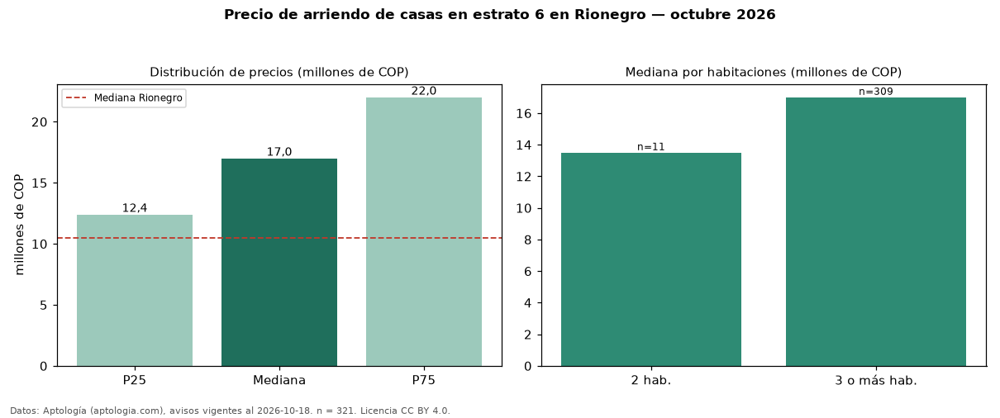

Precio de arriendo de casas en estrato 6 en Rionegro — octubre 2026
En Rionegro, la mediana de canon mensual de casas en estrato 6 es COP 17 millones, según 321 avisos vigentes. Frente a la mediana de las casas en arriendo de Rionegro (COP 10,50 millones, n = 1.437), queda 62 % por encima; este segmento reúne el 22 % de esos avisos. Por metro cuadrado, la mediana es COP 40.000/m² al mes (n = 285), 9 % por encima de las casas en arriendo de Rionegro (COP 36.784/m²). El área mediana anunciada es 386 m². El segmento con más oferta es el de 3 o más habitaciones (309 avisos, mediana COP 17 millones); pasar de 2 habitaciones a 3 o más habitaciones cambia la mediana +26 %. La administración mediana declarada es COP 700.000 al mes (n = 79), aparte del canon. La mitad central de los avisos va de COP 12,40 millones a COP 22 millones (razón 1,8), una dispersión moderada. Datos: Aptología (aptologia.com), CC BY 4.0 — https://www.aptologia.com/arriendo/rionegro. Archivos: PDF, CSV con las cifras y gráfica PNG.

| Avisos únicos | 321 |
|---|---|
| Percentil 25 | COP 12.400.000 |
| Mediana | COP 17.000.000 |
| Percentil 75 | COP 22.000.000 |
| Mediana por m² | COP 40.000 |
Fuente: avisos vigentes de portales inmobiliarios recopilados por Aptología, deduplicados (mínimo 30 avisos únicos por celda). Precios pedidos, no cerrados. Fecha: 2026-10-18.